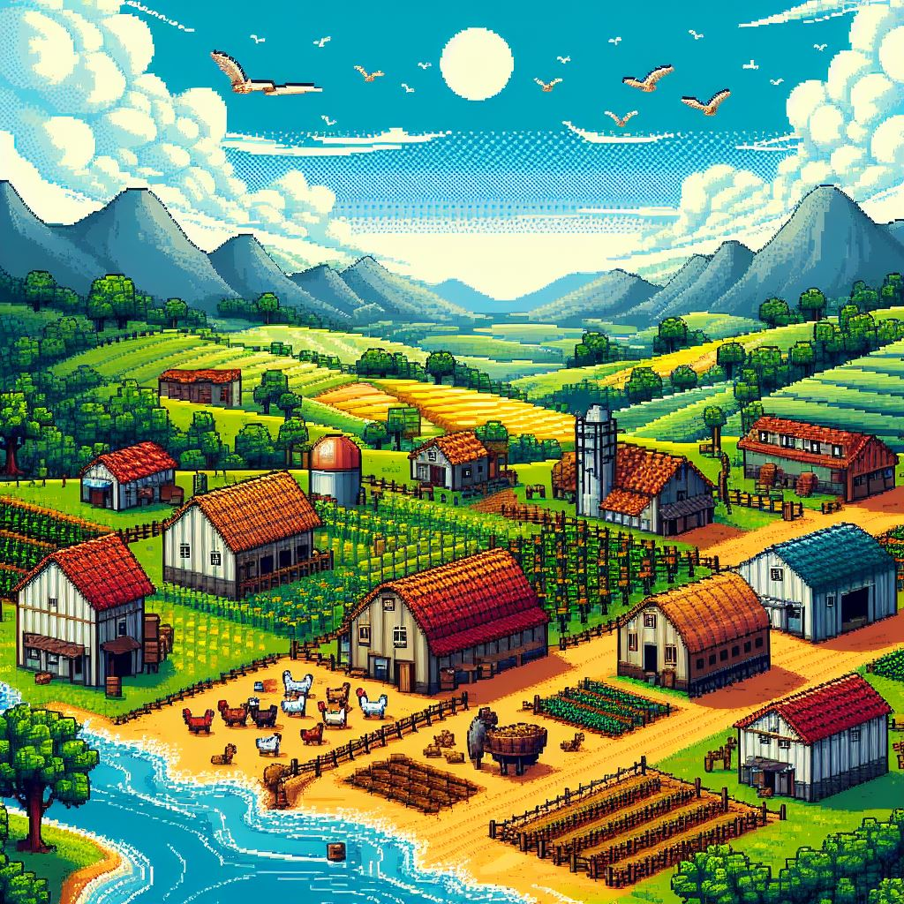

Projeto Aq.Chegamos
O AQ.Chegamos é um projeto de aplicação web que tem como objetivo criar uma plataforma para que os usuários possam pesquisar e encontrar excursões de ônibus cadastradas por outros usuários. O projeto foi desenvolvido utilizando as linguagens de programação HTML/CSS, JavaScript e PHP. Projeto realizado para a conclusão do curso.
HTML/CSS/JAVASCRIPT/PHP

Este site em python ou JavaScript
Este é meu primeiro projeto desenvolvido em python e django. Também é o primeiro projeto que utilizei o github. Meu site pessoal com o meu portifólio.
HTML/CSS/PYTHON/DJANGO

Bells Valley
Projeto de jogo simulador de fazenda e RPG - Em desenvolvimento
C#/UNITY

Dino Run!
Projeto de jogo baseado no jogo do dinossauro do chrome.
Pule para desviar dos obstáculos acumulando pontos pela distância percorrida.